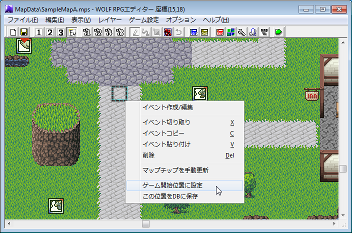
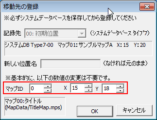
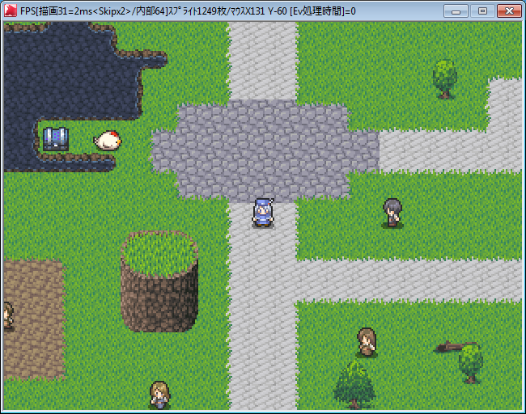

【2.スタート位置の設定】
ゲームを開始したときのスタート位置の設定方法について説明します。
まずマップエディタで「イベントレイヤー」を選択中に、スタート位置に設定したい場所で右クリックします。すると以下のようなメニューが表示されます。

そこで表示されるメニューのうち、「ゲーム開始位置に設定」を選択してください。すると以下のウィンドウが表示されます。
|  | 赤枠の部分に、すでにマップ番号と右クリックした座標が自動で入力されています。基本的には、何も変更せずそのまま「OK」を押すだけでゲーム開始位置が設定できます。 ※マップがシステムデータベースに登録されていない場合は「マップID」が自動で入力されません（常に0番になってしまいます）ので、その場合は先に |
↓ OKを押した後、 「テストプレイ」ボタンを押してゲームを開始してみましょう
|  | この通り、設定した位置から開始することができました。 |
以上の手順で、ゲームの開始位置の設定が完了しました。ゲーム作成において非常に重要なのはここまでですが、最後にオマケとして「移動先の登録機能」と「自動マップ生成機能」について説明します。
【移動先の登録機能】
【自動マップ生成機能】